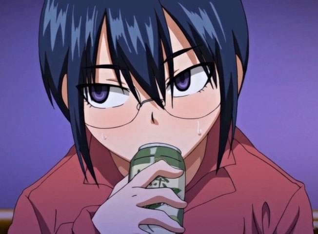

I love the female protagonist, also how the anime ends, it's soo good.
It is a stonish anime that talks about being yourself and how to deal with bullies.

A beautiful anime that tells the romance history of two different persons who fall in love for some pations that them have in common.